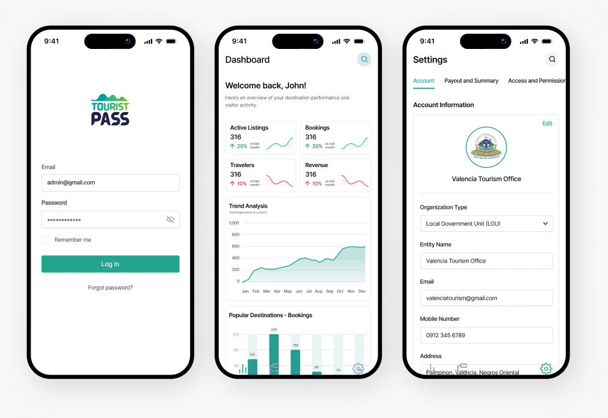
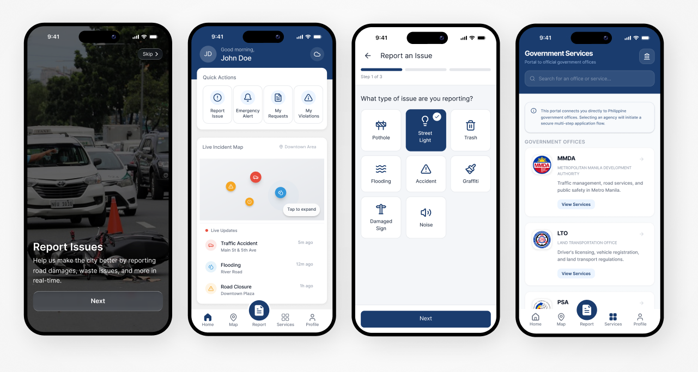

SCAN TO VIEW MORE
Mobile app screens spanning a rewards platform, a tourism pass, a streaming app, and a city services app.
A set of mobile UI screens across four different apps: a rewards and loyalty app with QR-based partner check-ins, a tourism management app with a login flow and analytics dashboard, a movie streaming app shown in both light and dark states, and a city services app for reporting issues with a live incident map.
Each composite groups the individual screens the way they were originally laid out during design, so onboarding, core, and settings flows can be seen side by side.
All 4 pieces from this collection.


SCAN TO VIEW MORE